O QUINTAL / MENU
À mesa, o gosto é seu.
Petiscos para partilhar, pratos para saborear e um doce para terminar. Escolha o que lhe apetece hoje.
Não encontrámos esse sabor. Experimente outro nome ou limpe a pesquisa.
01
Pratos do dia
De terça a sexta-feira, ao almoço.
Bochechas de porco estufadas com arroz e salada
10,90 €Lagartinhos com arroz
10,90 €Pataniscas de bacalhau com arroz de campo
10,90 €02
Para começar
Os primeiros sabores da mesa.
Pão
2,90 €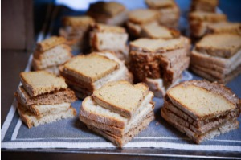
Manteiga aromatizada com ervas
1,90 €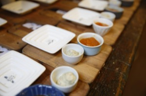
Queijo de vaca curado
2,90 €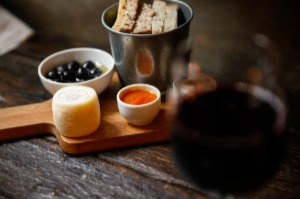
Doce caseiro
2,90 €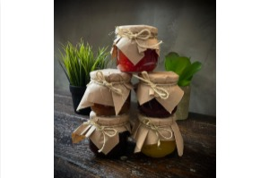
Azeitonas
1,90 €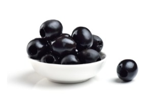
Creme de legumes
3,90 €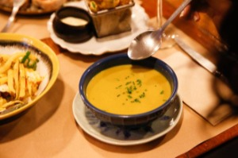
03
Para partilhar
Peça mais um prato. Prove mais um sabor.
Estaladiços de alheira
9,90 €Com grelos e molho agridoce · Picante
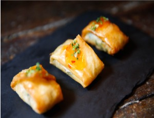
Ovos rotos
9,90 €Picante
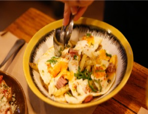
Arroz de gambas com algas
9,90 €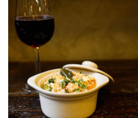
Moelas estufadas com enchidos
7,90 €Picante
Cogumelos frescos salteados com ervas
7,90 €Vegetariano
Gambas salteadas com alho e coentros
9,90 €Bruschetta com tomate, manjericão e parmesão
7,90 €Vegetariano
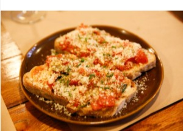
Ovos mexidos com farinheira e maçã verde
8,90 €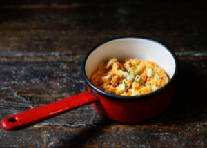
Tártaro de salmão com manga e cebolinho
12,90 €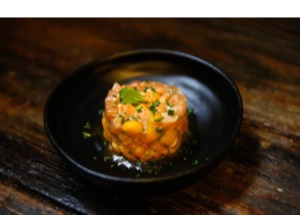
Pimentos padrón
9,90 €Picante · Vegetariano
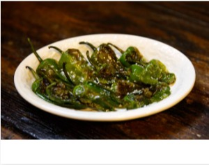
Queijo chèvre gratinado com mel, nozes e passas
9,90 €Vegetariano
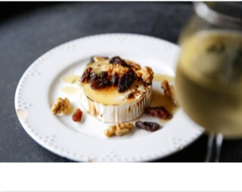
Pataniscas de bacalhau
9,90 €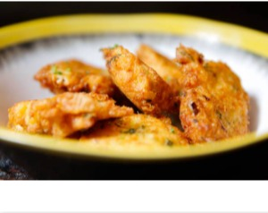
Pica-pau de novilho
9,90 €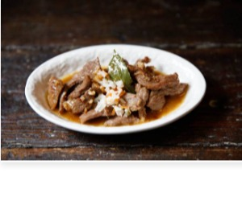
Bacalhau à Brás
9,90 €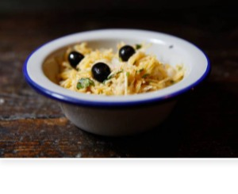
04
Peixe
Do mar, com um toque do Quintal.
Salmão grelhado com legumes salteados
18,90 €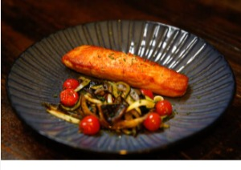
Bacalhau com broa de milho, grelos e batata a murro
21,90 €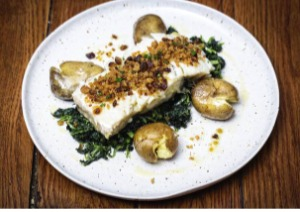
Polvo com grelos salteados e chips de batata-doce
29,90 €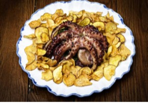
Risotto de camarão com manga e caril
18,90 €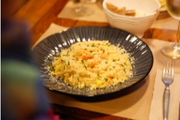
05
Carne
Pratos que pedem tempo à mesa.
Lagartinhos com batata frita
16,90 €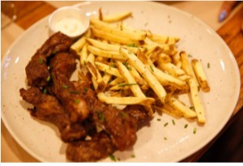
Bochechas de porco estufadas com açorda de coentros
19,90 €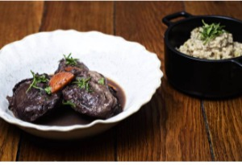
Bife do lombo à portuguesa com ovo, presunto e batata frita
22,90 €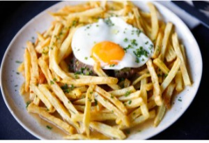
O nosso bitoque
16,90 €06
Vegetariano
Uma escolha cheia de sabor.
Risotto de cogumelos
15,90 €Vegetariano
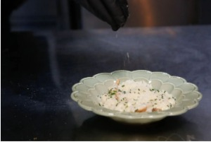
07
Extras
Para acompanhar ao seu gosto.
Batata frita
3,90 €Chips de batata-doce
3,90 €Salada mista
3,90 €Arroz
3,90 €Legumes salteados
4,90 €Açorda de coentros
4,90 €08
Para terminar
Há sempre espaço para um doce.
Mousse de chocolate
3,10 €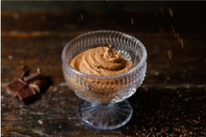
Mousse de lima
4,10 €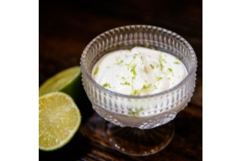
Banoffee
4,10 €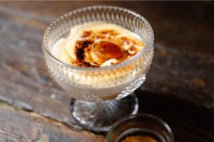
Bolo de chocolate cremoso
4,10 €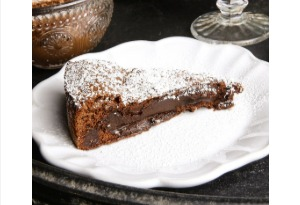
Cheesecake
4,10 €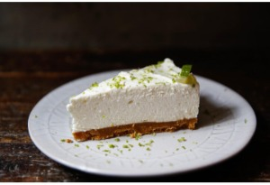
09
Águas e sumos
Frescura à mesa.
Água sem gás
2,10 €0,375 L
Água com gás
2,10 €0,25 L
Limonada
2,10 €Coca-Cola
2,50 €33 cl
Coca-Cola Zero
2,50 €33 cl
Ice Tea manga
2,50 €Ice Tea limão
2,50 €Ice Tea pêssego
2,50 €Schweppes Ginger Ale
2,10 €Schweppes Água Tónica
2,10 €10
Cafés e afins
Mais uns minutos à conversa.
Café, descafeinado e abatanado
1,10 €Chás e infusões
2,10 €11
Cervejas e sidras
Para brindar à companhia.
Imperial
2,60 €0,25 L
Caneca
5,00 €0,5 L
Super Bock média
2,60 €0,33 L
Super Bock preta
2,60 €Super Bock sem álcool
2,60 €Somersby frutos vermelhos
3,10 €Somersby maçã
3,10 €12
Sangrias
O brinde que se partilha.
Sangria branca ou tinta
15,10 €1 L
Sangria branca ou tinta
17,10 €1,5 L
Sangria espumante
17,10 €1 L
Sangria espumante
18,10 €1,5 L
13
Vinhos
Uma viagem por sabores portugueses.
Vinho da casa
3,10 €Copo
Vinho da casa
7,10 €0,5 L
Vinho da casa
11,10 €0,75 L
Vinho tinto Assobio
19,10 €Douro
Vinho tinto Papa Figos
19,10 €Douro
Vinho tinto Dona Ermelinda
17,10 €Península de Setúbal
Vinho tinto Dona Ermelinda Reserva
19,10 €Península de Setúbal
Vinho tinto Herdade dos Coteis
16,10 €Alentejo
Vinho tinto Herdade dos Grous
29,10 €Alentejo
Vinho tinto Monte da Peceguina
29,10 €Alentejo
Vinho branco Assobio
19,10 €Douro
Vinho branco Papa Figos
19,10 €Douro
Vinho branco Dona Ermelinda
19,10 €Península de Setúbal
Vinho branco Catarina
19,10 €Península de Setúbal
Vinho branco Herdade dos Coteis
16,10 €Alentejo
Vinho branco Herdade dos Grous
29,10 €Alentejo
Vinho rosé Assobio
19,10 €Vinho verde Quinta da Aveleda
17,10 €Vinho Casa Ermelinda Freitas (bruto)
18,10 €Espumante
Vinho espumante Santero (doce)
16,10 €Espumante
14
Bebidas espirituosas
Para fechar a refeição.
Moscatel
5,90 €Martini
5,90 €Porto Ferreira Tawny
6,90 €Porto tónico
7,90 €Gin Nordes
14,10 €Whisky Famous Grouse
6,10 €Whisky Grant’s
5,10 €Whisky Johnnie Walker
6,10 €Whisky Balvenie 12 anos
14,10 €Whisky J&B
6,10 €Whisky J&B 15 anos
16,10 €Whisky Logan
10,10 €Aguardente CRF
5,10 €Aguardente Adega Velha
14,10 €Aguardente Brandy Croft
7,10 €Licor Beirão
5,10 €Amêndoa amarga
5,10 €Ginja
5,10 €Preços em euros. Confirme a disponibilidade dos pratos e os preços com a equipa.
Tem alguma alergia ou intolerância alimentar? Fale connosco antes de fazer o pedido.
A MELHOR PARTE É ESTAR JUNTO